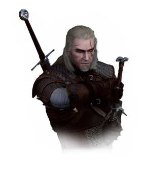
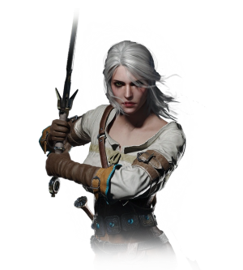
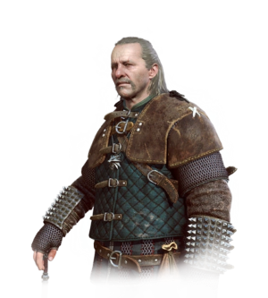
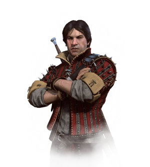

-
Geralt de Rívia
Descrição
Geralt de Rivia, um lendário bruxo da Escola do Lobo no século XIII, amava a feiticeira Yennefer e se tornou pai adotivo de Ciri. Durante a Prova das Ervas, ele exibiu uma tolerância incomum aos mutagênicos, resultando em cabelo branco e possivelmente maior velocidade, força e resistência.
-
Ciri
Descrição
Cirilla Fiona Elen Riannon, conhecida como Ciri, nasceu em 1253 e é filha de Pavetta e Duny, e neta da rainha Calanthe de Cintra. Ela é a rainha de Cintra e está ligada pelo destino ao bruxo Geralt de Rívia.
-
Vesemir
Descrição
Vesemir é o bruxo mais velho e experiente de Kaer Morhen, servindo como uma figura paterna para Geralt e os outros bruxos. Sobrevivente do ataque a Kaer Morhen, ele passa os invernos na fortaleza e viaja na primavera, sendo um excelente esgrimista com grande conhecimento sobre monstros, embora não possua o conhecimento para criar novos agentes mutagênicos.
-
Eskel
Descrição
Eskel é um bruxo calmo e amigo de juventude de Geralt, com quem cresceu e treinou em Kaer Morhen. Tão hábil e experiente quanto Geralt, Eskel se distingue pela cor dos cabelos e uma longa cicatriz no rosto, passando os invernos em Kaer Morhen como os outros bruxos.
-
Lambert

Descrição
Lambert, um jovem bruxo de Kaer Morhen, é conhecido por sua língua afiada e ressentimento em relação a Geralt e Triss Merigold. Ele ajudou a treinar Ciri no combate e passa os invernos em Kaer Morhen. Lambert inveja a fama de Geralt e vê ser um bruxo como uma cruel reviravolta do destino.